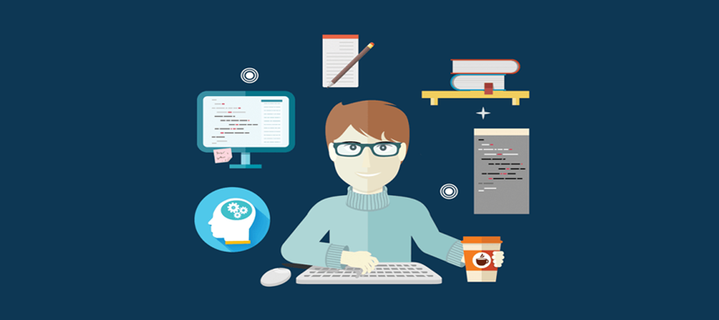

Introdução
A Gestão da Qualidade de Software é indispensável para qualquer empresa que deseja garantir a entrega do produto certo da forma correta. É através dela que otimizamos o desenvolvimento, garantindo assim um produto funcional e que agregue valor para o negócio. Em resumo, ela consiste na definição de estratégias e processos que conduzam à excelência e à satisfação de quem recebe o produto. Ou seja, o foco é sempre no usuário final.
Como funciona a Gestão da Qualidade de Software?
Em resumo, a Gestão da Qualidade do Software é dividida em duas etapas: Garantia da Qualidade e Controle da Qualidade.
Começando pelo Test First, que irá reduzir os possíveis erros e evitar falhas futuras; passando pela verificação dos requisitos, com base no ciclo de vida do User Story; e finalizando com a estratégia de testes e rastreabilidade, onde conseguimos garantir que todas as necessidades do cliente e do usuário final serão atendidas.
Benefícios
Um problema recorrente entre empresas que desejam ter um software próprio ou personalizado é a presença de falhas, que podem ser de usabilidade, layout ou até performance. Isso acontece justamente pela falta de um serviço de Gestão da Qualidade de Software que, além de contribuir para um desenvolvimento mais ágil, também pode gerar outros benefícios.
1 - Aumento da confiança e satisfação do usuário.
2 - Maior assertividade das entregas.
3 - Diminuição dos riscos de negócios e imagem.
4 - Redução de retrabalhos e BUGS.
5 - Transparência e padronização.
6 - Previsibilidade e ampliação da visão do todo.